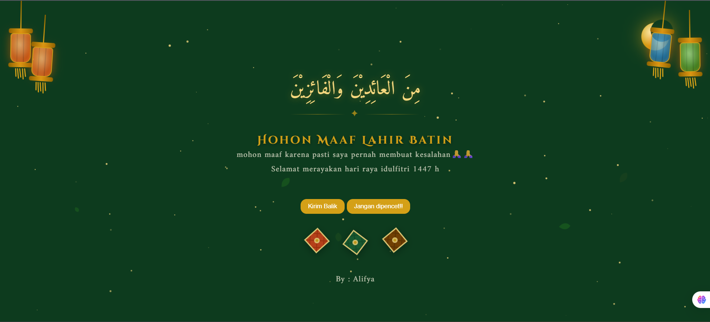

Halo, Saya Alifya Alfatih Pakro
Siswa Madrasah Aliyah Kejuruan Negeri Ende yang berfokus pada pengembangan Web (Frontend & Backend) serta UI/UX Design.
About Me
Alifya A. Pakro
Siswa MAKN Ende • NTT
Saya berasal dari Kabupaten Alor, Nusa Tenggara Timur (NTT). Saat ini sedang menempuh pendidikan di Madrasah Aliyah Kejuruan Negeri (MAKN) Ende.
Saya memiliki ketertarikan dalam dunia pemrograman dan desain antarmuka. Saya mempelajari teknologi web, membangun aplikasi web yang fungsional, serta merancang pengalaman pengguna yang responsif dan estetis.
.jpeg)
Skills & Technologies
Teknologi dan tools yang biasa saya gunakan dalam membuat project web dan desain UI/UX.
Frontend Development
Backend & Database
UI/UX & Tools
My Projects
Kumpulan hasil karya dan proyek yang telah saya selesaikan.
Pengelola Keuangan Bisnis
Website untuk membantu mengelola, mencatat, dan menyimpan data dari sebuah bisnis.

Inventory Obat Asrama
Website untuk mengelola data obat asrama menggunakan sistem CRUD.

Toko Buku
Website management buku dan penjualan buku online.

Ucapan Idul Fitri
ucapan selamat hari raya idul fitri,beserta interaksi, dan animasi objek yang menarik

Nun Store Web Design
Desain antarmuka Website toko penjualan online.

Toko baju Web Design
Desain antarmuka Website toko penjualan online.

Wisata Alam Web Design
Desain antarmuka Website Pariwisata Alor online.
Mari Bekerja Sama
Punya pertanyaan atau ingin berkolaborasi? Silakan kirim pesan!